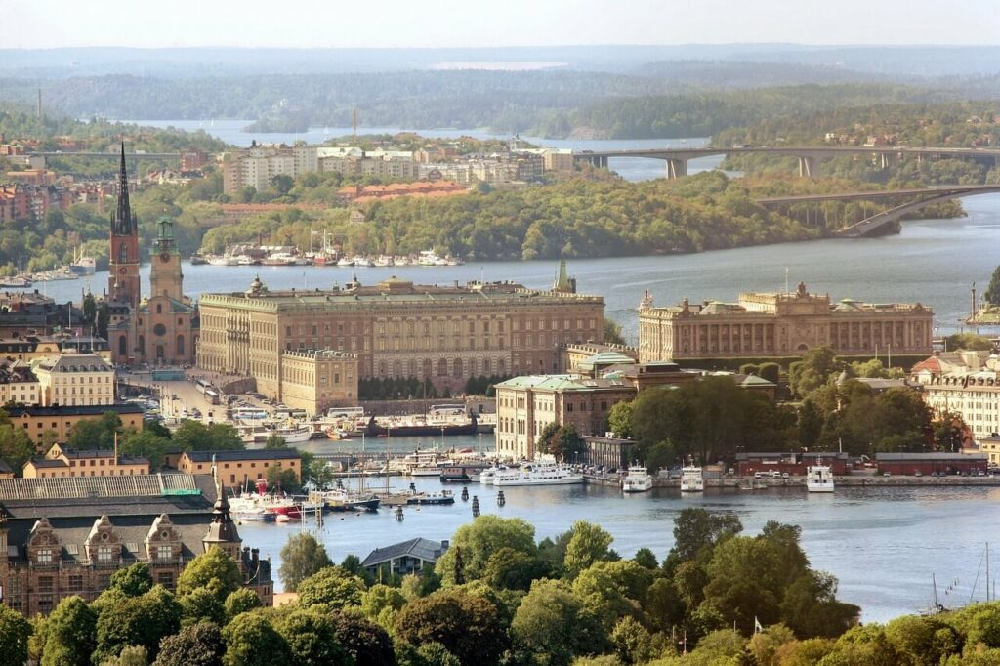
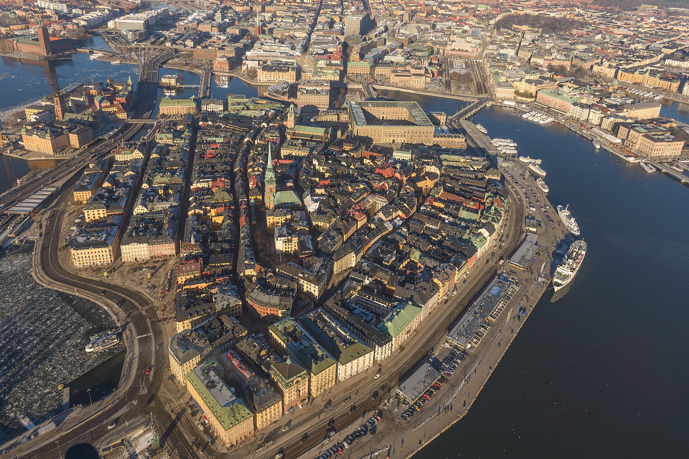
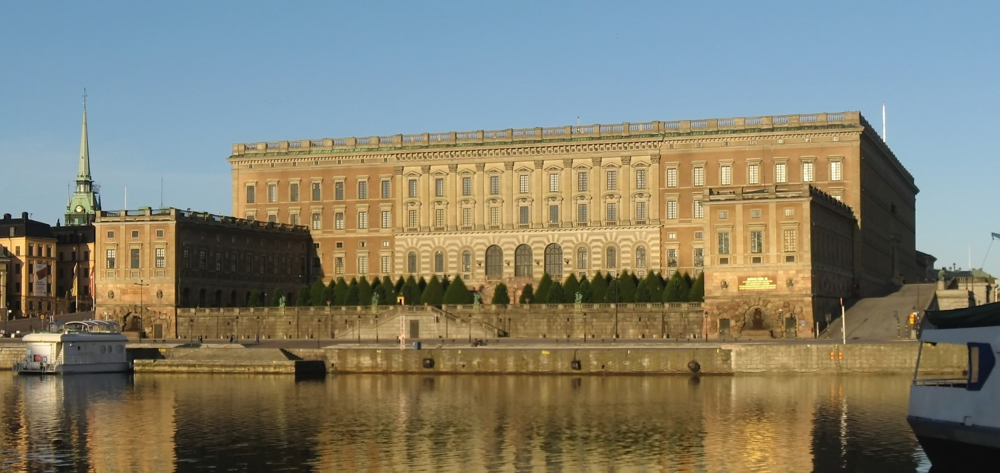

Sztokholm (szw. Stockholmⓘ [stɔkːɔlm]) – stolica i najludniejsze miasto (tätort) Szwecji, główny ośrodek polityczny, ekonomiczny i kulturalny kraju. Siedziba rządu i parlamentu Szwecji oraz szwedzkiej rodziny królewskiej. Siedziba władz (residensstad) regionu administracyjnego (län) Sztokholm oraz ośrodek administracyjny (centralort) gminy Sztokholm (Stockholms kommun lub Stockholms stad)[a]. Miasto zostało założone według tradycji w 1252 roku przez jarla Birgera. Od początku XV w. Sztokholm zaczął pełnić rolę głównego ośrodka kraju. W 1436 roku zostały nadane przywileje miejskie. Status stolicy Szwecji został oficjalnie potwierdzony w akcie o formie rządu z 1634 roku (1634 års regeringsform).

Gamla stan (wym. [ˈɡâmːla ˈstɑːn], Stare Miasto) – historyczna dzielnica Sztokholmu położona na wyspach: Stadsholmen, Riddarholmen, Strömsborg i Helgeandsholmen, założona w XIII wieku przez jarla Birgera. Powierzchnia dzielnicy wynosi 0,36 km² a zamieszkuje ją ok. 3 000 mieszkańców. Znajduje się tu rokokowo-gustawiański murowany Pałac Królewski ukończony w 1754 roku. Wybudowano go po wielkim pożarze, jaki strawił większą część miasta. Podczas pobytu króla w pałacu na maszt wciągana jest flaga Szwecji. Gamla stan połączony jest z pętlą komunikacyjną Slussen, która również posiada bogatą historię. Na terenie Slussen znajduje się loża wolnomularska, odpływają stąd również statki do Finlandii i Djurgården. Dzielnica jest dobrze skomunikowana z resztą miasta m.in. dzięki liniom metra.

Pałac Królewski (szw. Kungliga slottet) – oficjalna rezydencja królewska w Sztokholmie, na wyspie Stadsholmen, w dzielnicy Gamla stan. Szwedzka Rodzina Królewska mieszka jednak na stałe w Pałacu Drottningholm (szw. Drottningholm Slott), położonym kilkanaście kilometrów na zachód od centrum.